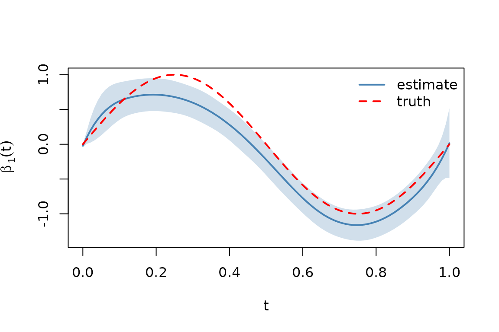
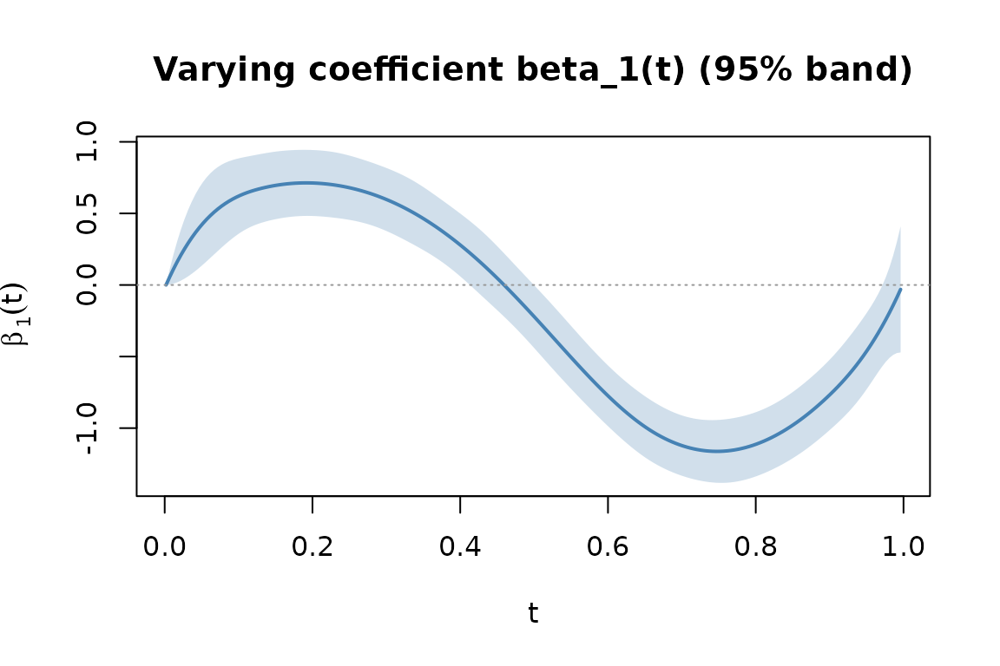

What this package fits
cevcmm fits Varying Coefficient Mixed-Effects Models (VCMMs):
where each
is a smooth function of
(cubic B-splines with a second-order-difference penalty),
are random effects with one of three covariance structures
(diag, kronecker, separable), and
.
The package implements two estimators from Jalili and Lin (2025):
- SS (sufficient-statistics): iterates to convergence using only the aggregated summary . Raw data is not needed once the summaries exist.
- CSL (one-step communication-efficient): a single Newton refinement from a pilot estimator. Asymptotically equivalent to SS at a fraction of the cost when the pilot is good enough.
This vignette walks through the simplest case: a single varying coefficient, diagonal random effects, all on one machine.
Fit
A single vcmm() call. With method = "auto"
(default), CSL is picked when
or
;
otherwise SS. This small example picks SS.
fit <- vcmm(y, X = x, Z = Z, t = t,
method = "auto",
re_cov = "diag",
control = vcmm_control(sigma_eps = 0.5,
sigma_alpha = 0.4,
update_variance = TRUE))
fit
#> <vcmm_fit> Varying Coefficient Mixed-Effects Model fit
#> method : SS
#> n_obs : 500
#> p (fixed) : 12
#> q (random) : 3
#> RE cov : diag
#> iterations : 6 (converged)
#> sigma_eps : 0.5076
#> sigma_alpha : 0.6327
#> elapsed : 0.0010 secInspect the fit
All standard S3 methods work on a vcmm_fit.
# Fixed-effects coefficient vector (intercept + spline basis coefs)
head(coef(fit))
#> (Intercept) X1.basis1 X1.basis2 X1.basis3 X1.basis4 X1.basis5
#> 2.0964161 0.5030534 0.7076757 0.7309835 0.5535361 0.1841452
# Same vector, reshaped: intercept + (basis x covariate) matrix
fx <- fixef(fit)
fx$intercept
#> [1] 2.096416
dim(fx$varying)
#> [1] 11 1
# Random effects
ranef(fit)
#> a1 a2 a3
#> -0.3444478 -0.8156558 0.6458339
# Sample size and residual SD
nobs(fit)
#> [1] 500
fit$sigma_eps
#> [1] 0.5076087
# Log-likelihood, AIC, BIC
logLik(fit)
#> 'log Lik.' -382.0597 (df=14)
AIC(fit); BIC(fit)
#> [1] 792.1193
#> [1] 851.1238A full summary() includes a coefficient table with
z-tests:
summary(fit)
#> VCMM fit
#> Call:
#> vcmm(y = y, X = x, Z = Z, t = t, method = "auto", re_cov = "diag",
#> control = vcmm_control(sigma_eps = 0.5, sigma_alpha = 0.4,
#> update_variance = TRUE))
#>
#> Method: SS | RE covariance: diag | N = 500 | p = 12 | q = 3
#> Converged: TRUE | iterations: 6
#>
#> Variance components:
#> sigma_eps = 0.5076
#> sigma_alpha = 0.6327
#>
#> Fixed-effects coefficients:
#> Estimate Std. Error z value Pr(>|z|)
#> (Intercept) 2.09642 0.04496 46.624 < 2e-16 ***
#> X1.basis1 0.50305 0.25076 2.006 0.044847 *
#> X1.basis2 0.70768 0.17089 4.141 3.46e-05 ***
#> X1.basis3 0.73098 0.14918 4.900 9.58e-07 ***
#> X1.basis4 0.55354 0.15058 3.676 0.000237 ***
#> X1.basis5 0.18415 0.14567 1.264 0.206195
#> X1.basis6 -0.39507 0.14982 -2.637 0.008366 **
#> X1.basis7 -1.07510 0.14548 -7.390 1.47e-13 ***
#> X1.basis8 -1.23697 0.14889 -8.308 < 2e-16 ***
#> X1.basis9 -0.89275 0.16475 -5.419 6.00e-08 ***
#> X1.basis10 -0.42265 0.18407 -2.296 0.021667 *
#> X1.basis11 -0.03057 0.22485 -0.136 0.891855
#> ---
#> Signif. codes: 0 '***' 0.001 '**' 0.01 '*' 0.05 '.' 0.1 ' ' 1Recover the varying coefficient
varying_coef() evaluates
at any grid with optional pointwise standard errors.
t_grid <- seq(0, 1, length.out = 100L)
vc <- varying_coef(fit, t_new = t_grid, k = 1L, se.fit = TRUE)
plot(t_grid, vc$fit, type = "l", lwd = 2, col = "steelblue",
xlab = "t", ylab = expression(hat(beta)[1](t)),
ylim = range(vc$fit - 2 * vc$se.fit,
vc$fit + 2 * vc$se.fit,
beta_1_fun(t_grid)))
polygon(c(t_grid, rev(t_grid)),
c(vc$fit + 2 * vc$se.fit, rev(vc$fit - 2 * vc$se.fit)),
col = adjustcolor("steelblue", alpha.f = 0.25), border = NA)
lines(t_grid, beta_1_fun(t_grid), col = "red", lty = 2, lwd = 2)
legend("topright", c("estimate", "truth"),
col = c("steelblue", "red"), lty = c(1, 2), lwd = 2, bty = "n")
Estimated and true varying coefficient.
The estimate tracks the true across the unit interval; the band is the pointwise 95% Wald interval.
Predict on new data
new_idx <- sample.int(N, 5L)
newdata <- list(t = t[new_idx],
X = x[new_idx],
Z = Z[new_idx, , drop = FALSE])
predict(fit, newdata = newdata)
#> [1] 2.446979 1.345711 2.245892 3.585412 4.432112
y[new_idx]
#> [1] 2.504206 1.197534 2.516585 3.594750 4.272266With se.fit = TRUE:
Built-in diagnostic plots
plot(fit, which = 1) shows the varying coefficient with
its confidence band; which = 2 requires the training data
and shows residual diagnostics; which = 3 shows
random-effect diagnostics. See ?plot.vcmm_fit.
plot(fit, which = 1)
Built-in plot.vcmm_fit panel 1.
Where to go next
-
Distributed fitting — when data lives on multiple
nodes or won’t fit in memory:
vignette("distributed-fitting", package = "cevcmm"). -
Origin-destination migration — Kronecker covariance
for OD-flow data:
vignette("od-migration", package = "cevcmm").